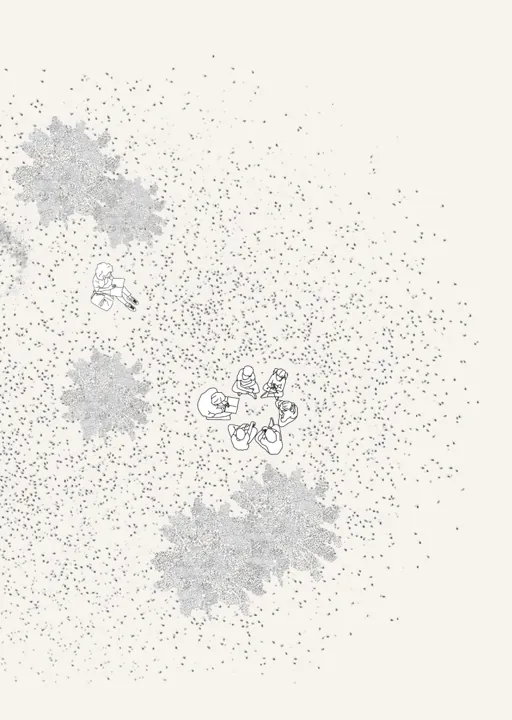
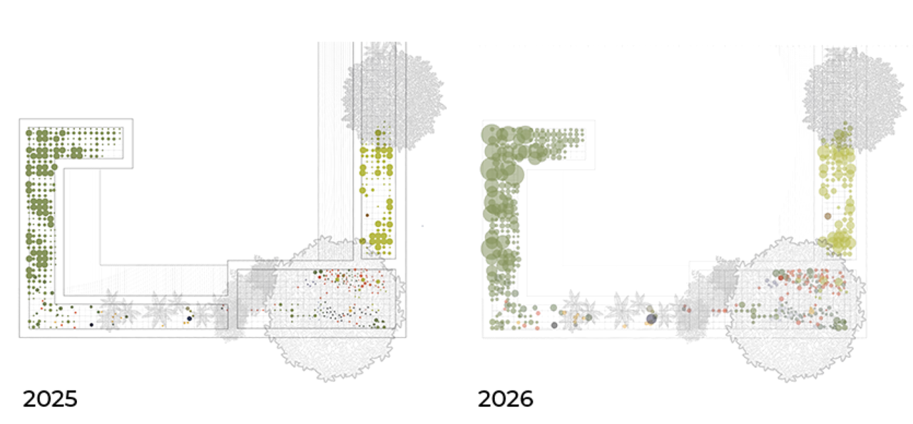
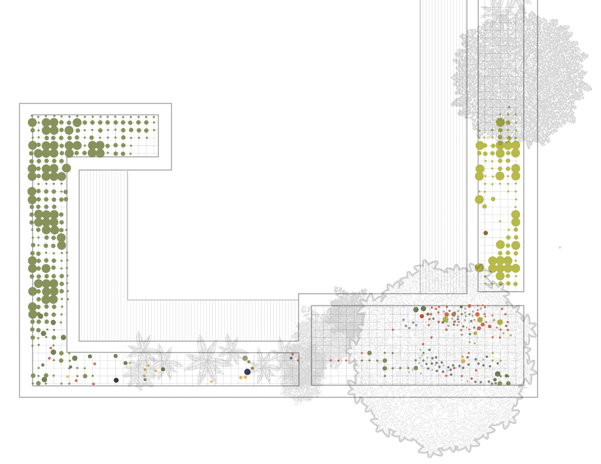
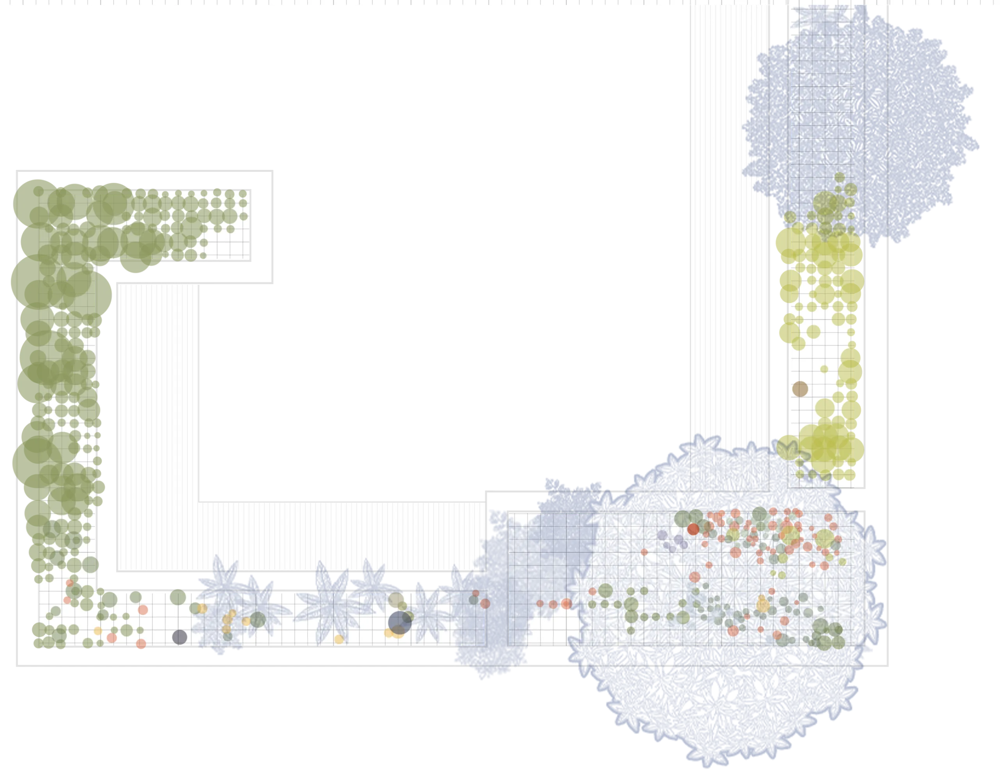
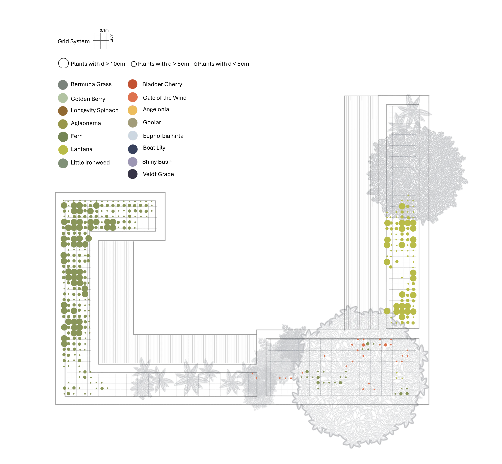
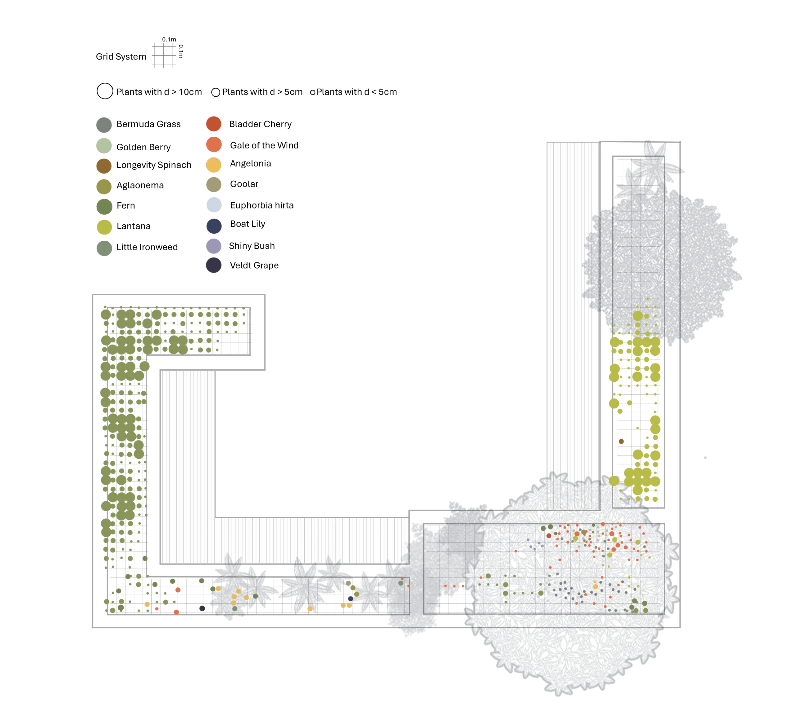
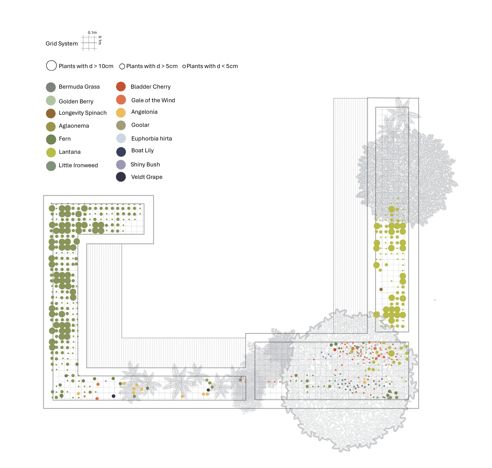
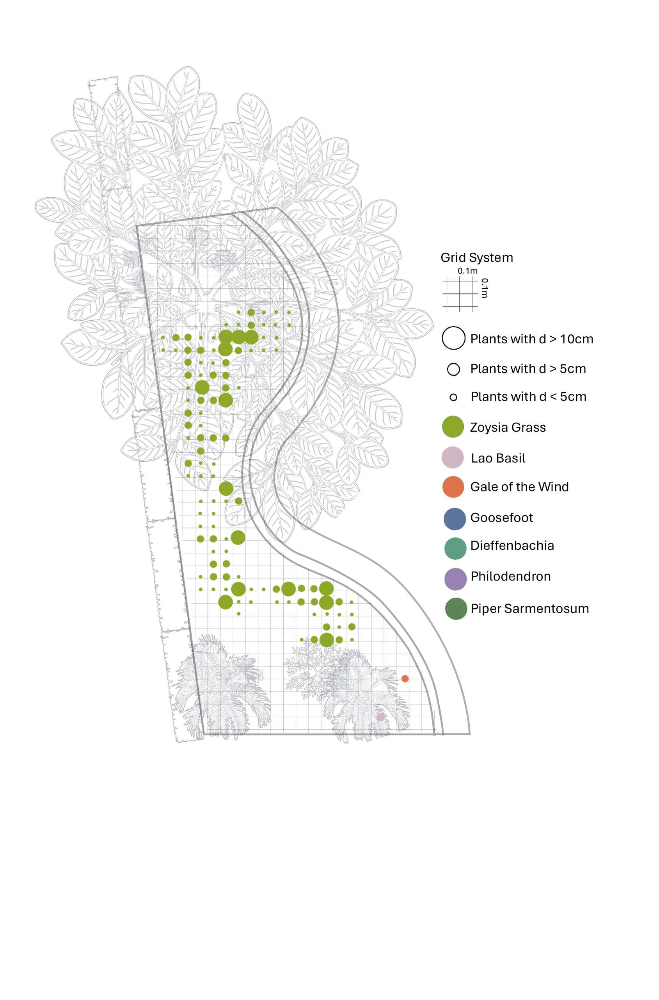
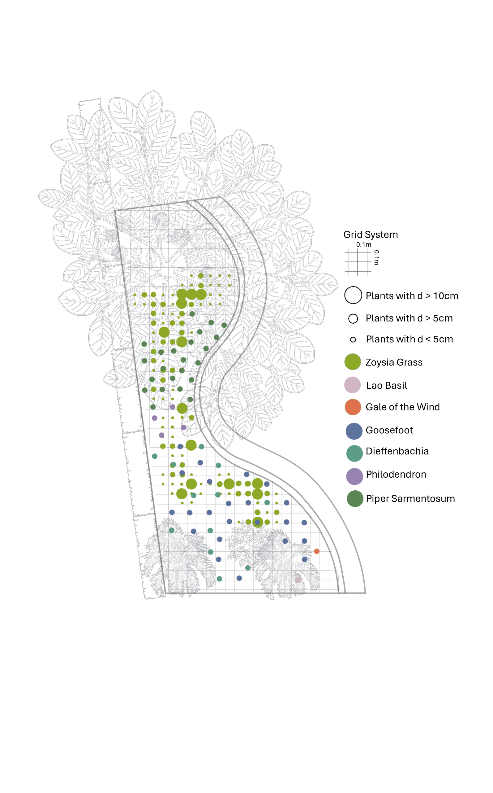

Landscape research at the smART Hub Living Labs (SHLL) is fundamentally anchored in a Research-by-Design (RBD) methodology, positioning UEH Campus V as a critical “regulatory sandbox” for operationalizing Glocal Design—a strategic synthesis that translates Vietnamese indigenous knowledge into standardized, climate-resilient urban models.
Moving beyond generic aesthetic interventions, this academic inquiry systematically codifies indigenous character by re-evaluating the Vietnamese Garden House (Nhà vườn) typology as a functional ecological gene bank rather than a purely ornamental space.
Through empirical testbeds such as Sod Culture and the intentional reintroduction of endemic species—including jackfruit (Artocarpus heterophyllus), tamarind (Tamarindus indica), and native ferns—the research quantifies the performance of vernacular vegetation in mitigating the tropical heat island effect and restoring urban biodiversity. By adopting a “Fail-Forward” philosophy, the lab treats real-world technical contingencies and hardware limitations as primary empirical data, refining climate-resilient design standards that are both culturally rooted and scientifically validated. Ultimately, these landscape experiments facilitate the transition from localized “niche” interventions to a systemic “regime” of sustainable innovation, providing a scalable blueprint for the authentic evolution of Net Zero campuses in the Global South.

The Strata Garden Testbed investigates how multi-layered planting systems can enhance biodiversity, spatial complexity, and ecological resilience within a compact urban environment. Emerging from an iterative Research-by-Design process at the smART Hub Living Labs (SHLL), the project did not begin as a fixed design framework. Instead, it evolved through continuous planting experiments, species adaptation, and long-term observation, gradually revealing a naturally stratified ecological structure.
Inspired by the layered organization commonly found in tropical ecosystems, the testbed documents the coexistence of vegetation across multiple ecological strata. Groundcover species and spontaneous vegetation occupy the lowest layer, followed by herbaceous flowering plants, ornamental shrubs, small palms, understory trees, and canopy species. Climbing plants such as passionfruit vines further extend the vertical dimension, while suspended kokedama installations and hanging ferns introduce an intermediate aerial layer that increases habitat diversity and visual connectivity.
Beyond its spatial composition, the Strata Garden functions as a long-term ecological monitoring platform. Plant growth, survival rates, seasonal responses, species interactions, and maintenance requirements are systematically recorded through weekly observations. Although the initial planting experiments began in late 2025, construction activities and waterproofing maintenance works delayed consistent data collection. Formal monitoring was therefore established in March 2026 and continues to provide valuable insights into plant adaptation and ecological succession under real-world campus conditions.
Through the lens of Glocal Design, the Strata Garden reinterprets the layered vegetation patterns commonly found in Vietnamese home gardens and tropical landscapes into a contemporary urban living laboratory. The research contributes to the development of scalable planting models that maximize ecological performance, biodiversity value, and climate resilience while maintaining a strong connection to local environmental knowledge and cultural identity.

The Strata Garden originated in late 2025 as a series of exploratory planting experiments at UEH Campus V. Initially, vegetation was arranged in simple layers ranging from groundcovers and herbaceous species to shrubs and small trees. As new species were gradually introduced, including climbers, kokedama, and hanging ferns, the landscape began to naturally develop a multi-layered structure resembling tropical ecosystem stratification.
During this period, the site remained highly dynamic due to ongoing construction activities and waterproofing maintenance works. While regular observations of plant growth and adaptation were conducted, systematic monitoring had not yet been established. These early experiments nevertheless revealed the ecological potential of layered planting systems and laid the foundation for the formal Strata Garden research initiated in March 2026.

Since March 2026, the Strata Garden has been formally monitored as a living landscape laboratory within SHLL. The planting system now consists of multiple vegetation layers, including groundcovers, herbaceous plants, shrubs, understory trees, canopy species, climbers, and suspended kokedama. Weekly observations are conducted to document plant health, growth performance, seasonal changes, and species interactions.
As an ongoing Research-by-Design experiment, the testbed evaluates how layered planting systems contribute to biodiversity enhancement, microclimate improvement, and ecological resilience within a compact urban campus. The collected data informs future landscape strategies that integrate tropical ecological principles with Glocal Design approaches.



The Sod Culture Testbed serves as a living experimental platform within the smART Hub Living Labs (SHLL), investigating alternative landscape strategies for biodiversity restoration and ecological resilience in tropical urban environments. Rather than relying on conventional ornamental planting schemes, the research adopts a process-oriented approach that enables vegetation communities to establish, evolve, and self-regulate through natural ecological interactions.
Rooted in the principles of Glocal Design, the testbed draws inspiration from indigenous landscape systems and traditional land stewardship practices, reinterpreting them within a contemporary campus context. Native grasses, spontaneous vegetation, and locally adapted species are intentionally introduced and monitored as part of a dynamic ecological matrix. This strategy recognizes native flora not as weeds to be removed, but as valuable ecological assets capable of supporting pollinators, insects, microorganisms, birds, and other components of the urban ecosystem.
Through continuous observation and performance evaluation, the research examines how sod-based vegetation communities contribute to microclimate regulation, soil stabilization, stormwater infiltration, carbon sequestration, and habitat creation. The testbed also documents succession patterns, species adaptation, and ecological relationships that emerge over time, generating empirical data for the development of climate-responsive landscape guidelines.
Adopting the SHLL “Fail-Forward” research philosophy, the Sod Culture Testbed embraces uncertainty and ecological variability as essential sources of knowledge. Seasonal fluctuations, unexpected species colonization, and maintenance challenges are treated as research opportunities that inform adaptive management strategies. In doing so, the project moves beyond static landscape aesthetics toward a regenerative design framework, demonstrating how locally adaptive ecological systems can become scalable models for biodiversity-positive and Net Zero urban development in the Global South.

Since March 2026, the Sod Culture Testbed has been formally monitored as a living ecological research plot within SHLL. The site supports a diverse assemblage of native grasses, spontaneous vegetation, and locally adapted species, creating conditions for natural interactions among plants, insects, and other organisms. Weekly observations document species composition, growth patterns, ecological succession, and seasonal changes.
As an ongoing Research-by-Design experiment, the testbed evaluates the role of naturally established vegetation communities in enhancing biodiversity, improving microclimatic conditions, and strengthening ecological resilience. The findings contribute to the development of locally adaptive landscape strategies rooted in Glocal Design principles and regenerative urban ecology.

